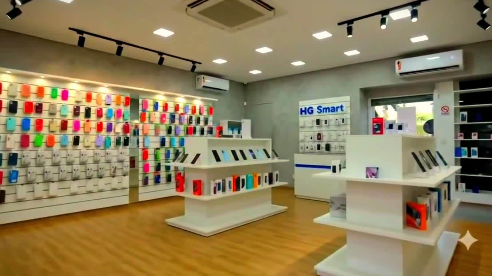

[ 10 unidades ]
Rio Grande do Sul
Índice
00 — Entrada
Por onde
começar?
Uns chegam sabendo o aparelho. Outros querem saber se conseguem comprar. Os dois caminhos levam ao mesmo lugar.

[ 10 unidades ]
Rio Grande do Sul
Índice
00 — Entrada
Uns chegam sabendo o aparelho. Outros querem saber se conseguem comprar. Os dois caminhos levam ao mesmo lugar.